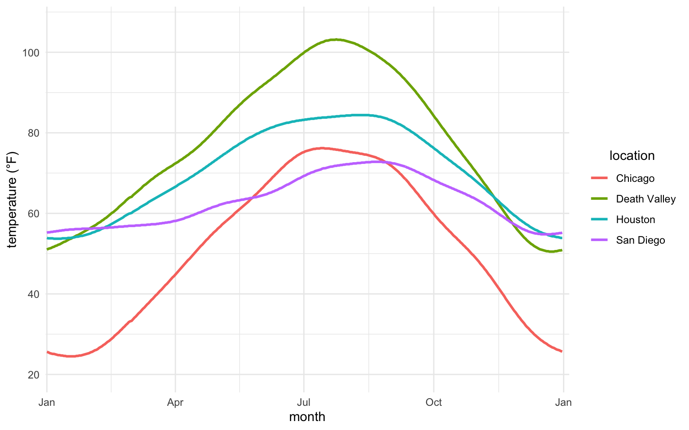
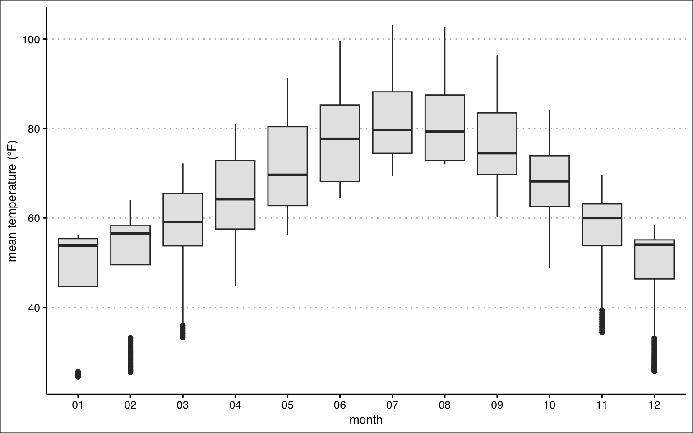
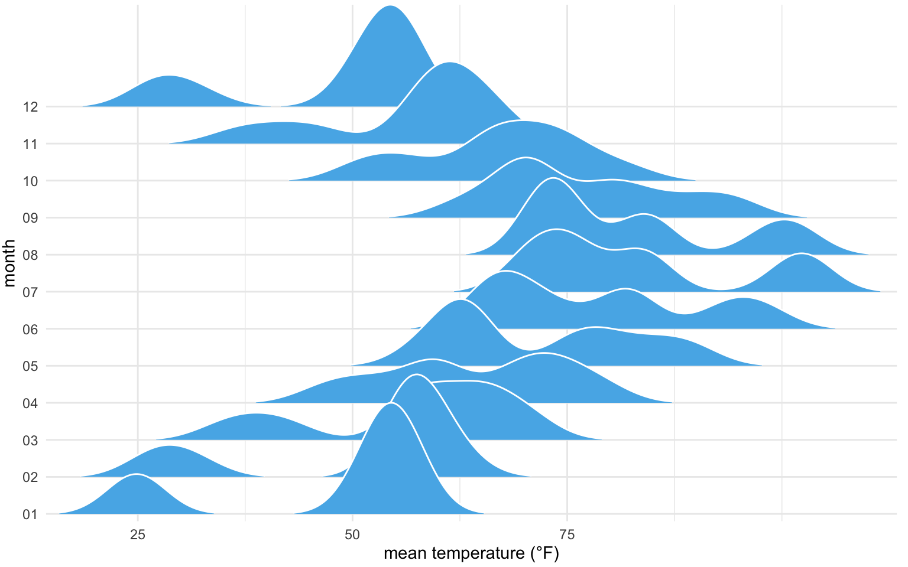
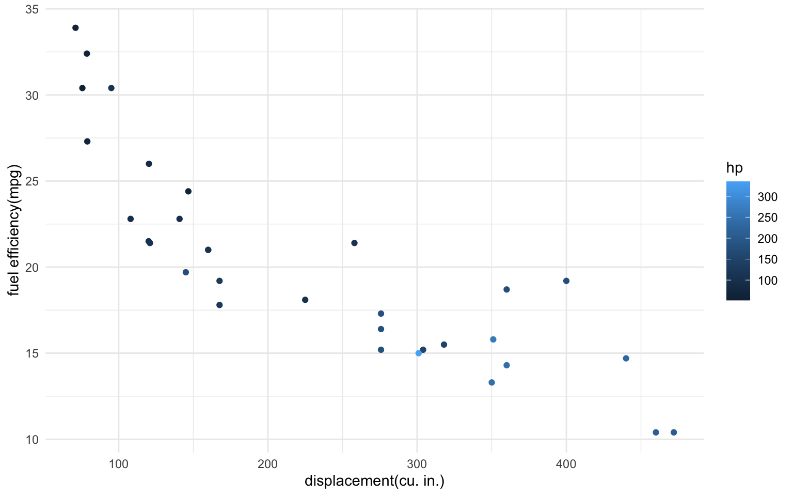
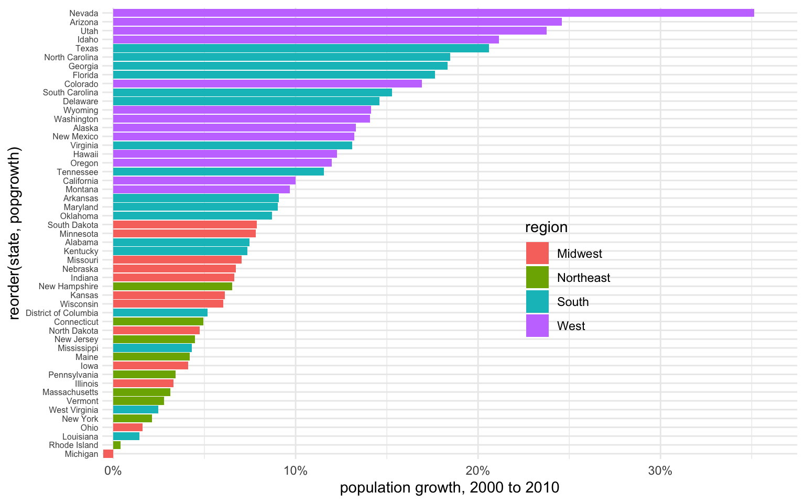
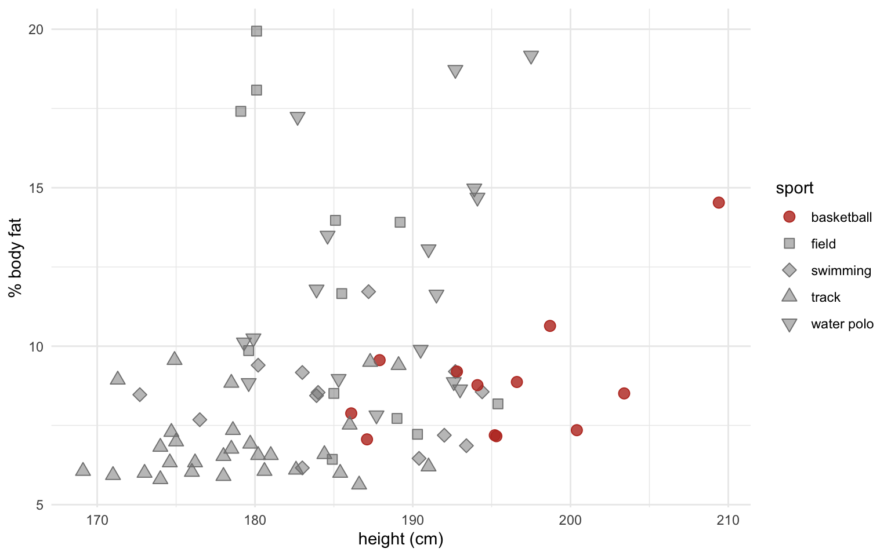
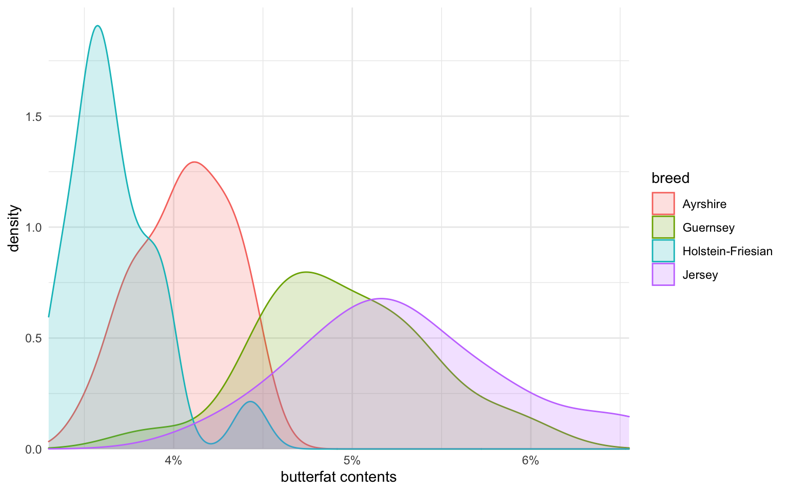

ncdc_temp <- read_csv(
'https://bcdanl.github.io/data/ncdc_temp_cleaned.csv')DANL 399: Data Visualization and Presentation
Homework Assignment 1
Question 1
Summarize each class and post it as a webpage under a new menu, “Classwork”, in your personal website on GitHub using Quarto.
Summary does not need to be formal and comprehensive!
FAQ about Quarto for R Markdown users are provided below: https://quarto.org/docs/faq/rmarkdown.html
A guide for creating a Quarto website is provided in the following webpage: https://quarto.org/docs/websites/.
Question 2
Provide ggplot codes to replicate the given figure.
Q2a.
Use the following data.frame for Q2a, Q2b, and Q2c.
ncdc_temp <- read_csv(
'https://bcdanl.github.io/data/ncdc_temp_cleaned.csv')
ggplot(ncdc_temp, aes(x = date, y= temperature)) +
geom_line(aes(color = location), size = 1) + geom_point(data = filter(ncdc_temp,
month %in% c("01", "04", "07", "10"),
day == 1)) + # Adds a layer to the ggplot object with a line plot of the temperature data, with a size of 1.
scale_x_date(name = "month", limits = c(ymd("0000-01-01"), ymd("0001-01-04")), # Adds a scale to the x-axis with the label "month" and limits of Jan 1, 0000 to Jan 4, 0001, and breaks at the beginning of each quarter (Jan, Apr, Jul, Oct), with corresponding labels.
breaks = c(ymd("0000-01-01"), ymd("0000-04-01"), ymd("0000-07-01"),
ymd("0000-10-01"), ymd("0001-01-01")),
labels = c("Jan", "Apr", "Jul", "Oct", "Jan"), expand = c(1/366, 0)) +
scale_y_continuous(limits = c(19.9, 107), # Adds a scale to the y-axis with limits of 19.9 to 107, breaks at every 20 units, and label "temperature (°F)".
breaks = seq(20, 100, by = 20),
name = "temperature (°F)") +
theme(legend.title.align = 0.5) # Adjusts the alignment of the legend title to be centered.
Q2b
ncdc_temp <- read_csv(
'https://bcdanl.github.io/data/ncdc_temp_cleaned.csv')
p <- ggplot(ncdc_temp, aes(x = month, y= temperature))
# add a box plot with grey fill
p + geom_boxplot(fill = 'grey90') +
# add labels for x and y axes
labs(x = "month",
y = "mean temperature (°F)") +
# apply a custom theme to the plot
theme_clean()
Q2c
Use ggridges::geom_density_ridges() for Q2c.
ncdc_temp <- read_csv(
'https://bcdanl.github.io/data/ncdc_temp_cleaned.csv')
p <- ggplot(ncdc_temp, aes(x = temperature, y = month))
p + geom_density_ridges( # Adds a layer to the ggplot object with a smoothed density plot of the temperature data using the 'ridgeline' plot type.
scale = 3, rel_min_height = 0.01, # Sets the scaling and minimum relative height for the plot.
bandwidth = 3.4, fill = "#56B4E9", color = "white" # Sets the bandwidth for the plot, as well as the fill and color for the plot elements.
) +
scale_x_continuous( # Adds a scale to the x-axis for continuous values.
name = "mean temperature (°F)", # Sets the label for the x-axis.
expand = c(0, 0), breaks = c(0, 25, 50, 75) # Sets the expansion and the break points for the x-axis.
) +
scale_y_discrete(
name = "month", expand = c(0, .2, 0, 2.6)) + # Adds a scale to the y-axis for discrete (categorical) values, with a label and a custom expansion.
theme( # Applies a custom theme to the ggplot object.
plot.margin = margin(3, 7, 3, 1.5) # Sets the margin of the plot.
)
Q2d
Use ggplot::mtcars for Q2d.
m <- ggplot(data = mtcars, aes(x = disp, y = mpg, color = hp))
m + geom_point(aes(color = hp)) + # add scatter plot with color mapped to "hp" variable
labs(x = "displacement(cu. in.)", y = "fuel efficiency(mpg)")+ # add labels to x and y axes
scale_color_gradient()+ # add color gradient scale legend
scale_fill_brewer(palette = "Emrld") # add fill color palette with "Emrld" scheme to the legend
Q2e
Use the following data.frame for Q2e.
popgrowth_df <- read_csv(
'https://bcdanl.github.io/data/popgrowth.csv')p <- ggplot(popgrowth_df,
aes(x = reorder(state, popgrowth),
y = 100*popgrowth,
fill = region))
p + geom_col() + # Add the geom for the columns
scale_y_continuous(
limits = c(-.6, 37.5), expand = c(0, 0), # Set y axis limits and expansion
labels = scales::percent_format(accuracy = 1, scale = 1), # Set percent labels for y axis
name = "population growth, 2000 to 2010" # Set name for y axis
) +
coord_flip() + # Flip the x and y axis
theme(legend.position = c(.67, .4), # Set legend position
axis.text.y = element_text( size = 6,
margin = margin(t = 0, r = 0, b = 0, l = 0) )) # Adjust the size and margin for y axis text
Q2f
Use the following data.frame for Q2f.
male_Aus <- read_csv(
'https://bcdanl.github.io/data/aus_athletics_male.csv')# Define color and fill vectors for use in plot
colors <- c("#BD3828", rep("#808080", 4))
fills <- c("#BD3828D0", rep("#80808080", 4))
p <- ggplot(male_Aus, aes(x=height, y=pcBfat, shape=sport, color = sport, fill = sport))
# Add geom_point layer with custom size
p + geom_point(size = 3) +
# Set shape values for different sports
scale_shape_manual(values = 21:25) +
# Set color values for different sports
scale_color_manual(values = colors) +
# Set fill values for different sports
scale_fill_manual(values = fills) +
# Set x and y axis labels
labs(x = "height (cm)",
y = "% body fat" )
Q2g
Use the following data.frame for Q2g.
titanic <- read_csv(
'https://bcdanl.github.io/data/titanic_cleaned.csv')p <- ggplot(titanic, aes(x = age, y = after_stat(count) ) )
# Add a density line plot for all passengers with transparent color, and fill legend with "all passengers"
p + geom_density_line(
data = select(titanic, -sex),
aes(fill = "all passengers"),
color = "transparent"
) +
# Add another density line plot for each sex with transparent color, and fill legend with sex
geom_density_line(aes(fill = sex), bw = 2, color = "transparent") +
# Set the x-axis limits, name, and expand arguments
scale_x_continuous(limits = c(0, 75), name = "passenger age (years)", expand = c(0, 0)) +
# Set the y-axis limits, name, and expand arguments
scale_y_continuous(limits = c(0, 26), name = "count", expand = c(0, 0)) +
# Set the manual color and fill values, breaks, and labels for the legend
scale_fill_manual(
values = c("#b3b3b3a0", "#0072B2", "#D55E00"),
breaks = c("all passengers", "male", "female"),
labels = c("all passengers ", "males ", "females"),
name = NULL,
guide = guide_legend(direction = "horizontal")
) +
# Set the Cartesian coordinate system to allow for data points to fall outside the plot limits
coord_cartesian(clip = "off") +
# Create separate density line plots for male and female passengers
facet_wrap(~sex) +
# Set the x-axis line to blank, increase the strip text size, and set the legend position and margin
theme(
axis.line.x = element_blank(),
strip.text = element_text(size = 14, margin = margin(0, 0, 0.2, 0, "cm")),
legend.position = "bottom",
legend.justification = "right",
legend.margin = margin(4.5, 0, 1.5, 0, "pt"),
legend.spacing.x = grid::unit(4.5, "pt"),
legend.spacing.y = grid::unit(0, "pt"),
legend.box.spacing = grid::unit(0, "cm")
)
Q2h
Use the following data.frame for Q2h.
cows_filtered <- read_csv(
'https://bcdanl.github.io/data/cows_filtered.csv')p <- ggplot(cows_filtered, aes(x = butterfat, color = breed, fill = breed))
# add a density line for each breed with some transparency
p + geom_density_line(alpha = .2) +
# set x-axis properties
scale_x_continuous(
expand = c(0, 0), # remove padding from axis limits
labels = scales::percent_format(accuracy = 1, scale = 1), # format axis labels as percentages with 1 decimal point
name = "butterfat contents" # set axis label
) +
# set y-axis properties
scale_y_continuous(limits = c(0, 1.99), expand = c(0, 0)) +
# set plot area properties
coord_cartesian(clip = "off") + # allow density lines to extend beyond axis limits
theme(axis.line.x = element_blank()) # remove x-axis line